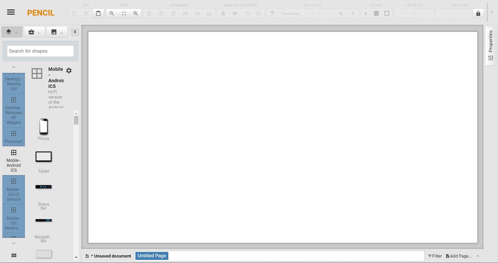

NIM : 1811500042
Nama : Arie Saputra
Kelompok: TI6A
Hasil saya menyadur di pertemuan 5 :
Pada pertemuan kali ini membahas tentang cara merancang layar, menggunakan aplikasi Pencil. Aplikasi dapat di download dibawah ini : Link Download
Jika telah selesai download dan menginstal aplikasinya, kita akan membuat rancangan layar. caranya dengan menekan Create New Document, lalu untuk shape-nya kita menggunakan
Mobile-Android ICS. Tampilannya akan seperti berikut ini :

Jika sudah, maka langkah selanjutnya adalah kita akan merancang layar. Hasil dari percobaan saya dalam merancang layar untuk melanjutkan yang telah diterangkan oleh dosen. dapat dilihat pada file dibawah ini : Download file
Jika telah selesai rancangan layarnya, maka langkah selanjutnya adalah mendeskripsikan rancangan layar tersebut.
Pada dokumen dibawah ini, setiap gambar telah dideskripsikan dengan baik. dokumen dapat didownload dengan link dibawah ini : Download Dokumen